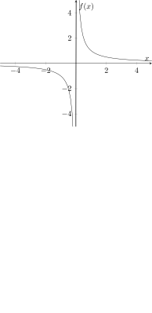
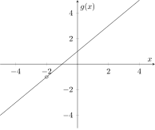
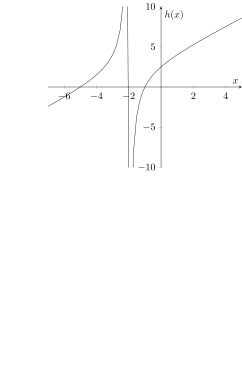
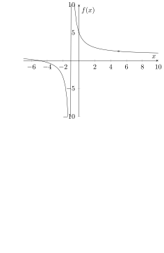
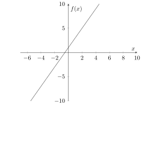
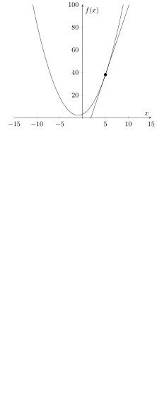

In this section, we focus on learning the tools necessary for the parameter update in Gradient Descent. We will go more in depth and figure out exactly how to find “the slope of the tangent line” as well as what that even means. We do this through learning the basics of Calculus. In this text, we will focus on only a small area of Calculus (as we did with Linear Algebra).
6.1Limits
Consider the function: f(x)=x1. What do you think will happen as x becomes infinite? Of course, x can never be infinite, so we are basically asking what will happen as we continue to increase the value of x indefinitely. Let’s make a table with some values of x and f(x):
x
f(x)
1
1
10
0.1
100
0.01
1000
0.001
It seems that we get closer and closer to 0. Obviously, we can never get to 0 because if f(x)=0, then: 0=f(x)=x1 or 0=1 for all values of x (besides x=0, where the function is undefined).
We can also see this through graphing. Namely, we can graph f(x)=x1:

Now we see that it looks as if we keep on increasing x, then f(x) will tend to the value of 0. The same thing seems to happen if we keep decreasing x. Do you see why?
Let’s take another example. Let our function now be:
g(x)=x+2x2+3x+2.
We graph this function:

This looks almost linear! –except for that hole, of course. We have a hole at x=−2 because g(x) is undefined for x=−2. (Why?)
Other than this, however, this line looks a little bit like the graph of y=x+1. How come? To answer this question, we simply factor the numerator and the denominator. We get:
g(x)=x+2x2+3x+2=x+2(x+2)(x+1)=x+1.
That is, for all x in the domain of g(x),g(x)=x+1. This means that other than that hole, g(x) is actually linear. What if the numerator was changed so that our new function was
h(x)=x+2x2+6x+5
instead? Here is the graph:

The vertical line represents an asymptote, or a line which the graph can never reach. Let us examine the behavior of the above graph. First, there seems to be something interesting going on at x=−2. What happens when we get extremely close to x=−2 from the right side (the positive side)? What about the left side (the negative side)? We can create the following table:
x
h(x)
−3
4
−2.1
31.9
−2.01
301.99
−2.001
3001.999
−2
undefined
−1.999
−2997.999
−1.99
−297.99
−1.9
−27.9
−1
0
It seems that as we approach x=−2 from the left, the value of h(x) increases without bound. On the other hand, when we approach x=−2 from the right, the value of h(x) seems to decrease without bound.
Let’s think about why this might be true. Let x<−2 and ∣x−(−2)∣<δ, where δ is a very small positive number. (It might be helpful to think of δ as δ=0.001.) Essentially, we are saying that x is a number that is super close to −2, but still less than −2.
Then, the numerator of h(x) is negative (this is because x2+6x+5 is very close to (−2)2+6(−2)+5=−3<0). The denominator is negative as well because if x<−2, then x+2<−2+2=0.
Therefore, when x<−2 and ∣x−(−2)∣<δ,h(x)=negative numbernegative number=positive number. Therefore, h(x)>0, and we can see this is true by examining the graph. Additionally, since ∣x−(−2)∣<δ, the denominator of h(x) is extremely small while the numerator stays close to −3. This means that h(x) is not only positive, but it is very large in magnitude. In fact, as δ becomes smaller and closer to 0, the value of h(x) will grow without bound.
What about when x>−2 and ∣x−(−2)∣<δ? In this case, x is a number that is greater than 2, but only by a very small amount. Then, the numerator is still close to −3<0, but the denominator is positive since x>−2→x+2>0. Therefore, h(x)=positive numbernegative number=negative number. So, h(x)<0, and we can again see this is true by examining the graph. Additionally, since ∣x−(−2)∣<δ, the denominator of h(x) is extremely small (again). As such, h(x) is a negative number with a very large magnitude.
Before we go on, our use of extremely and very seems to be very “hand wavy.” Calculus gives us a way to represent these ideas through a limit. Let’s explore this concept.
First, how do we represent h(x) when x<−2 and ∣x−(−2)∣<δ? In other words, how do we represent the value of h(x) where xapproaches−2 but is still less than −2? We can use a limit, as follows: x→−2−limh(x). Here, we are taking the “limit” as x approaches −2 from the left hand side (or the negative side) of h(x). Take a moment to see how this matches up with the notation above. The arrow (→) represents that x is approaching −2 from the left hand side. In truth, x will never be−2, but the limit will ensure that we are using a value of x that is extremely close to the desired −2.
Try doing the next case yourself.
Problem. How do we represent h(x) when x>−2 and ∣x−(−2)∣<δ? In other words, how do we represent the value of h(x) where xapproaches−2 but is still greater than −2? Use a limit.
The answer to this question is similar to the last limit: x→−2+limh(x). However, there is one difference. We are approaching −2, but from the right hand side this time. So, we write a positive sign to the top right of −2 instead of the negative sign. Everything else is the same.
We have our limit expressions. Now how do we evaluate them? Recall that The value of x→−2−limh(x) is positive and grows without bound. In Calculus, we represent quantities which grow without bound as ∞, pronounced “infinity.” ∞ is the highest theoretical number, but it is not a number. It is a conceptual mechanism which allows us to think of arbitrarily large numbers.
Remark. Here is a word of caution: Do not say that ∞ is a number to a mathematician. Chances are, they will get angry. 🙂
The corresponding theoretical smallest negative number is −∞.
Therefore, we can say that x→−2−limh(x)=∞. Similarly, x→−2+limh(x)=−∞ because this limit grows without bound and is negative.
In this last example, we introduced the limit, a profound idea which separates Calculus from other branches of mathematics. Through this example, we got a glimpse as to how a limit works in practice, but we have yet to cover the rigorous definition of a limit. We will do this now.
Remark. Note that in the previous example, where the limits where ∞ and −∞, the limits Do Not Exist (DNE). This is because ∞ is not a real number. We often write DNE as our answer, specifying that this limit Does Not Exist because it tends to ∞ or −∞.
6.1.1Definition of a Limit
Consider some function f(x). Let’s say we wish to examine the behavior of f(x) as x approaches a from the right. Define L as the limit of f(x) as x approaches a from the right, or: L=x→a+limf(x). What does this mean? Well, if x approaches a from the right, then x>a→x−a>0. Additionally, ∣x−a∣, or the distance between x and a on the number line, becomes extremely small when x approaches a. Let δ be some number that we can choose such that ∣x−a∣<δ.
Remark. Note that after we choose some δ, which is usually a very small positive number, we can simply produce a value of x that is close enough to a.
Then, under the condition that ∣x−a∣<δ, we can choose some δ such that the value ∣f(x)−L∣, or the distance between the limit L and the value f(x) on the number line, is substantially small.
Let ϵ be some positive number (ϵ>0). Therefore, 0≤∣f(x)−L∣<ϵ for any value of ϵ, no matter how small.
But what does this mean? In English, this means that when x approaches a, the distance between f(x) and L is so small that it is almost 0. In other words, as x approaches a,f(x) approaches L.
Similarly, say we wished to evaluate L=x→a−limf(x). Then, x<a→x−a<0. We must be able to choose some δ such that ∣x−a∣<δ and 0≤∣f(x)−L∣<ϵ. The only difference this time is that x is approaching a from the left instead of the right.
Now, define L1=x→a+limf(x) and L2=x→a−limf(x). If L1 or L2 is infinite, then that respective limit Does Not Exist (DNE). Otherwise, if L1=L2, let L=L1=L2. Then we define the following limit: L=x→alimf(x). On the other hand, if L1=L2, then the value x→alimf(x) Does Not Exist (DNE).
Essentially, if the limit of f(x) as x approaches a from the right is the same as the limit of f(x) as x approaches a from the left, then we can define the limit of f(x) as x approaches a (without specifying from which direction).
If x→a+limf(x)=x→a−limf(x)=f(a), then f(x) is continuous at x=a. If we say a function is continuous, we often mean that the function is continuous over all points in its domain.
6.1.2Examples of a Limit
Let’s do some practice problems to reinforce our knowledge of the limit. Try this problem on your own before seeing the solution.
Problem. Evaluate the following limit: x→5limx2−4x−5x2−25.
Solution Let f(x)=x2−4x−5x2−25, so we are trying to determine x→5limf(x). First, we graph to see what we are working with:

By definition, f(x) is undefined when x=−1 and x=5. There is a vertical asymptote at x=−1, but we are more interested in the behavior at x=5. The graph seems to be approaching the same value from the left and right of x=5, but we have to make sure.
First, we evaluate the limit as x approaches 5 from the right: =======x→5+limf(x)x→5+limx2−4x−5x2−25x→5+lim(x+1)(x−5)(x+5)(x−5)x→5+lim(x+1)(x−5)(x+5)(x−5)x→5+limx+1x+55+15+561035
Notice that we can make the cancellation in the fraction above because x−5=0. (Remember, even though x is very close to 5, it is not 5. Therefore, x−5 is nonzero and we can make the cancellation.)
Now, we evaluate the limit as x approaches 5 from the left: ====x→5−limf(x)x→5−limx2−4x−5x2−25x→5−limx+1x+55+15+535 Notice that the limits from the left and right were evaluated in almost the same way. Additionally, notice that x→5+limf(x)=x→5−limf(x). Therefore, the value x→5limf(x) is defined as x→5limf(x)=x→5+limf(x)=x→5−limf(x)=35, and this concludes the problem.
We can see that even though f(x) is not defined at x=5, we can find the limit as xapproaches 5. Additionally, the value of 35 seems to make sense when we look at the graph. Specifically, this limit value could be thought of as our “prediction” of what f(x) would be if f(x) was defined at x=5.
Secondly, notice the way in which we evaluated the limit. We factored both the numerator and the denominator. We then canceled x−5 in the numerator and denominator, after which we plugged in 5 for x. Even though x is not exactly 5, the expressions like x+5 are negligibly the same as if we used 5 for x. Can you see why?
6.1.3Properties of Limits
Now, let’s explore some common rules of limits. For these examples, c is some constant and we have x approaching some constant a. The functions f(x) and g(x) are some functions of x. Additionally, let L=x→alimf(x) and K=x→alimg(x).
Constant Property of Limits The following is a very simple limit rule, but it is still very important: x→alimcf(x)=cx→alimf(x)=c⋅L.
Proof We know that (according to the definition of a limit), there is some value of δ>0 such that ∣x−a∣<δ and 0≤∣f(x)−L∣<ϵ. Multiplying the latter inequality by ∣c∣, we get: 0≤∣c∣⋅∣f(x)−L∣<∣c∣⋅ϵ. Since ϵ is any positive number, we can choose its value so that ∣c∣⋅ϵ can be any positive number (since c is constant). Therefore, we can simplify the expression by replacing ∣c∣⋅ϵ with the simpler ϵ. Additionally, we can make the following simplification: ∣c∣⋅∣f(x)−L∣=∣c⋅f(x)−c⋅L∣. Then, we can safely claim the following statement: there is some value of δ>0 such that ∣x−a∣>0 and 0≤∣c⋅f(x)−c⋅L∣<ϵ. This statement is equivalent to the following equality: x→alimc⋅f(x)=c⋅L. Therefore, x→alimcf(x)=cx→alimf(x)=c⋅L.
A specific case of this rule occurs when f(x)=x. If this is the case, then the rule reads: x→alimc⋅x=cx→alimx=c⋅a if a is not infinite.
Another specific case of this rule occurs when f(x)=1. In this case, the rule reads: x→alimc⋅1=cx→alim1=c⋅1=c if a is not infinite. Another way to think about this limit property is to realize that the value of c is not dependent on the value of x because c is constant.
Addition Property of Limits Next is the Addition Property of limits: x→alim[f(x)+g(x)]=x→alimf(x)+x→alimg(x)=L+K.
Proof We know that there exists some δ1>0 such that ∣x−a∣<δ1 and 0≤∣f(x)−L∣<ϵ.
Similarly, there exists some δ2>0 such that ∣x−a∣<δ2 and 0≤∣g(x)−K∣<ϵ.
We can add the two latter inequalities to get: 0≤∣f(x)−L∣+∣g(x)−K∣<2ϵ. Recall the Triangle Inequality (from Geometry or Algebra), which states the following: ∣w∣+∣z∣≥∣w+z∣ for any numbers w and z (this property holds for all complex numbers). Therefore, ∣f(x)−L∣+∣g(x)−K∣≥∣f(x)−L+g(x)−K∣=∣(f(x)+g(x))−(L+K)∣. Combining this from the statement from before, we find that 0≥∣(f(x)+g(x))−(L+K)∣≤∣f(x)−L∣+∣g(x)−K∣<2ϵ. Noting that 2ϵ is some positive number, we find that 2ϵ can be replaced with the simpler ϵ. Then, simplifying this, we get 0≥∣(f(x)+g(x))−(L+K)∣<ϵ. Now, let δ=min(δ1,δ2). Recall the initial conditions ∣x−a∣<δ1 and ∣x−a∣<δ2. Note that with the new value of δ, both of these initial conditions are satisfied. (Why?)
Putting these two new conditions together, we can claim: there is some value of δ>0 such that ∣x−a∣<δ and 0≥∣(f(x)+g(x))−(L+K)∣<ϵ. This statement translates to the following equality: x→alim[f(x)+g(x)]=L+K. In other words, x→alim[f(x)+g(x)]=x→alimf(x)+x→alimg(x)=L+K.
Subtraction Property of Limits Very similar to the Addition Property of limits is the Subtraction Property of limits: x→alim[f(x)−g(x)]=x→alimf(x)−x→alimg(x)=L−K.
Problem. The proof for the Subtraction Property is very similar to the Addition Property. Can you prove it? (Hint: Remember to use the Triangle Inequality.)
Besides proving from scratch, another method to proving the Subtraction Property is to use the Constant Property and the Addition Property together. Concretely, evaluate the following limit: x→alim[f(x)+c⋅g(x)], where c=−1. (How does this relate to the Subtraction Property?)
Multiplication Property of Limits The Multiplication Property of limits states the following: x→alim[f(x)⋅g(x)]=x→alimf(x)⋅x→alimg(x)=L⋅K.
Proof Again, we return to the definition of a limit:
We know that there exists some δ1>0 such that ∣x−a∣<δ1 and 0≤∣f(x)−L∣<ϵ.
Similarly, there exists some δ2>0 such that ∣x−a∣<δ2 and 0≤∣g(x)−K∣<ϵ.
Let’s rewrite these two statements in a slightly different way:
We know that there exists some δ1>0 such that ∣x−a∣<δ1 and 0≤∣(f(x)−L)−0∣<ϵ.
This statement translates to the following equality: x→alim[f(x)−L]=0.
Similarly, there exists some δ2>0 such that ∣x−a∣<δ2 and 0≤∣(g(x)−K)−0∣<ϵ.
This statement translates to the following equality: x→alimg(x)−K=0. Multiplying the latter inequalities together, we get the following: 0≤∣(f(x)−L)−0∣⋅∣(g(x)−K)−0∣<ϵ or 0≤∣(f(x)−L)(g(x)−K)−0∣<ϵ. Let δ=min(δ1,δ2) and ∣x−a∣<δ, like before.
Then, these two combine to give us the following equality: x→alim(f(x)−L)(g(x)−K)=0.
This fact will be necessary for our proof. Let’s expand the following product: [f(x)−L]⋅[g(x)−K]=f(x)⋅g(x)−K⋅f(x)−L⋅g(x)+LK. Rearranging this, we get the following: f(x)⋅g(x)=[f(x)−L]⋅[g(x)−K]+K⋅f(x)+L⋅g(x)−LK. We now take the limit as x approaches a on both sides and simplify (take note of this technique where we take the limit of both sides of an equation): x→alimf(x)⋅g(x)x→alimf(x)⋅g(x)x→alimf(x)⋅g(x)x→alimf(x)⋅g(x)x→alimf(x)⋅g(x)x→alimf(x)⋅g(x)x→alimf(x)⋅g(x)=x→alim([f(x)−L]⋅[g(x)−K]+K⋅f(x)+L⋅g(x)−LK)=x→alim([f(x)−L]⋅[g(x)−K])+x→alimK⋅f(x)+x→alimL⋅g(x)−x→alimLK=x→alim([f(x)−L]⋅[g(x)−K])+K⋅x→alim⋅f(x)+L⋅x→alim⋅g(x)−LK=x→alim([f(x)−L]⋅[g(x)−K])+K⋅L+L⋅K−LK=x→alim([f(x)−L]⋅[g(x)−K])+LK=x→alim([f(x)−L]⋅[g(x)−K])+LK=0+LK
Notice how we use our previous rules in each of the steps. Therefore, x→alimf(x)⋅g(x)=LK. In conclusion, x→alim[f(x)⋅g(x)]=x→alimf(x)⋅x→alimg(x)=L⋅K.
Division Property of Limits The Division Property of limits states the following: x→alimg(x)f(x)=limx→ag(x)limx→af(x)=KL as long as K=limx→ag(x)=0 (otherwise we would be doing division by 0).
Proof In the proof of the Division Property, we use the Multiplication Property, which we already proved. Specifically, x→alimg(x)f(x)=x→alimf(x)⋅g(x)1=x→alimf(x)⋅x→alimg(x)1. We will be done if we can prove the following: x→alimg(x)1=limx→ag(x)1. Do you see why?
We know that we can pick some δ1>0 such that ∣x−a∣<δ1 and 0≤∣g(x)−K∣<ϵ for any ϵ>0. For this proof, we will do something different. We will pick a specific value for ϵ. Note that we can do this as long as the value we pick is positive (because ϵ can be any positive number).
Let ϵ=2∣K∣>0. Therefore, the final condition becomes 0≤∣g(x)−K∣<2∣K∣.(∗) Now, we apply the Triangle Inequality once again to develop another useful equality: ∣K∣=∣K−g(x)+g(x)∣≤∣K−g(x)∣+∣g(x)∣≤∣g(x)−K∣+∣g(x)∣<2∣K∣+∣g(x)∣,
where we applied inequality (∗) in the last step. Subtracting 2∣K∣ from both sides of this inequality, we get: 2∣K∣<∣g(x)∣. Taking the reciprocal of both sides (and switching the inequality sign as per the rules of inequalities), we get the following inequality: ∣K∣2>∣g(x)∣1.(△) Now, we will perform a similar argument again. Specifically, we know that we can pick some δ2>0 such that ∣x−a∣<δ2 and 0≤∣g(x)−K∣<ϵ for any ϵ>0. We will once again choose a specific value for ϵ. This time, let ϵ=2∣K∣2⋅ϵ1 for some ϵ1>0. So, 0≤∣g(x)−K∣<2∣K∣2⋅ϵ1.(⋄)
Now, let δ=min(δ1,δ2) so that both of our prior inequalities are satisfied. (We have done this a few times now. Make sure you understand why this method works.)
Now, time for some algebra: g(x)1−K1=g(x)⋅KK−g(x)=∣g(x)∣1⋅∣K∣1⋅∣g(x)−K∣<∣K∣2⋅∣K∣1⋅2∣K∣2⋅ϵ1<ϵ1,(3)
where we used (△) and (⋄) in step (3). Therefore, we are left with the following statement: we can choose some δ>0 such that ∣x−a∣<δ and 0≤g(x)1−K1<ϵ1, where ϵ1 is any positive number. Seem familiar? It should because this translates to the following limit: x→alimg(x)1=K1=limx→ag(x)1, as desired. As mentioned before, we can use this property along with the Product Property of limits, which we proved before, to prove the Division Property of limits.
6.2Derivatives
In this section, we will look at an important subset of limits: the derivative. The idea of a derivative will help us learn more about the “slope of the tangent line” we were after in the first place.
6.2.1Definition of a Derivative
First, we start with the definition of a derivative. Let f(x) be some function. The derivative of f(x) is represented by f′(x),dxdf(x), or dxdf(x). For the last two, the dx represents that we are taking the derivative of f(x) with respect to the variable x. Then, the definition of the derivative is the following: dxdf(x)=h→0lim(x+h)−xf(x+h)−f(x)=h→0limhf(x+h)−f(x). Let a=x+h. Then, the condition limh→0 is the same as limx→a. Do you see why? Then, the definition the derivative becomes: dxdf(x)=x→alima−xf(a)−f(x). Both of these expressions are valid definitions of the derivative. As you may expect, we say that the derivative as x approaches a from the left (or as h approaches 0 from the left) is the following: dxdf(x)=x→a−lima−xf(a)−f(x)=h→0−limhf(x+h)−f(x). Similarly, we say that the derivative as x approaches a from the right (or as h approaches 0 from the right) is the following: dxdf(x)=x→a+lima−xf(a)−f(x)=h→0+limhf(x+h)−f(x). The derivative is only defined if the derivative from the left and right exist and are equal.
6.2.2Interpretation of a Derivative
We have the definition of a derivative, but what does this mean? Is there any significance to this definition?
The answer is yes. The derivative is the “slope of the tangent line.” Take a look at the second definition of the derivative: dxdf(x)=x→alima−xf(a)−f(x). Do you see anything familiar here? This fraction is change in x-valueschange in y-values. In other words, this value represents the slope of the line going through two different points. Which points? Looking back at the definition, we see that the derivative is the slope of the line going through (a,f(a)) and (x,f(x)). Since x approaches a, the two points are very close to each other.
The derivative is the number that the slope of the secant line approaches as h shrinks to 0.
Figure 6.1.The curve is f(x)=x2+2x+3, the function in the next example. The orange secant passes through (x,f(x)) and (x+h,f(x+h)), which is the line through (x,f(x)) and (a,f(a)) with a=x+h. The dashed blue line is the tangent. At x=5 with h=2 the secant slope is 14, while f′(5)=12. Slide h down: the slope is 12.1 at h=0.1 and 12.001 at h=0.001, and the secant lies on top of the tangent. Approach from the left and the slope rises to 12 from below, from 10 at h=−2 to 11.999 at h=−0.001. The two sides agree, so the derivative exists. For this f the gap is exactly h, because hf(x+h)−f(x)=2x+2+h. Drag along the curve to move the point.
6.2.3Derivatives Examples
Let’s try some examples to get a better sense of how derivatives work.
Problem. Let f(x)=2x+1. Evaluate dxdf(x) when x=5.
Solution Using the first definition of the derivative, we get the following expression: dxdf(x)=h→0limhf(x+h)−f(x)=h→0limh2(x+h)+1−(2x+1)=h→0limh2x+2h+1−2x−1=h→0limh2h=2. Remember in the last step that while h approaches 0, it is never exactly 0. Therefore, we can make this simplification. Therefore, dxdf(x)=2 no matter what x is! In other words, the slope of the tangent line to f(x) is always 2. This makes sense when we look at the following graph of f(x):

Because f(x) is a line, it makes sense that the slope is constant over all real numbers. Therefore, the slope at x=5 (or any other x-value for that matter) is 2.
What about when the slope is not the same over the whole domain? Consider the following problem.
Problem. Let f(x)=x2+2x+3. Evaluate dxdf(x) when x=5.
Solution Once again, we use the definition of the derivative to get the following expression: dxdf(x)=h→0limhf(x+h)−f(x)=h→0limh(x+h)2+2(x+h)+3−(x2+2x+3)=h→0limhx2+h2+2xh+2x+2h+3−x2−2x−3=h→0limhh2+2xh+2h=h→0limh+2x+2=2x+2. In the last step, we used the fact that h is a number which is very close to 0. Therefore, h+k=k for any k.
We plug in x=5 to get our final answer because this is the condition given in the problem statement: 2x+2=2(5)+2=12. Therefore, the slope of the tangent line to the graph of f(x) at (5,f(5))=(5,38) is 12.
We can actually go a step further and find the equation of the tangent line at x=5. We know a point through which the line passes, namely (5,38), and the slope of the line, which is 12. We can then use the point slope form of a line to find it’s equation: y−38=12(x−5). In the following graph, we plot f(x) and the tangent line to the graph at x=5:

In fact, using the formula we derived for the derivative of f(x), we can find the slope of the tangent line (derivative) at any point in the domain of f(x). Using the point (x,f(x)) and this slope, we can also find the equation of the tangent line at any point in the domain of f(x).
Notice one more thing: the slope of the tangent line is not the same over the whole domain of f(x) as it was in the last problem. Instead, it depends on the value of x, which should make sense looking at the graph.
6.2.4Properties of Derivatives
As you may have guessed, derivatives have several important properties. In this section, we will state and prove these properties. You will see how we use the definition of the derivative along with the limit properties we proved in the last section to complete these proofs.
In this section, we will be taking the general derivative of a function. Specifically, we will not be finding the derivative at any one point x=a, but rather for some general x in the domain of the function.
Additionally, we will assume that f(x) and g(x) are functions such that dxdf(x) and dxdg(x) are both defined for all x which are in the domains of both f(x) and g(x). Finally, let c be some constant.
Constant Property of Derivatives The Constant Property of derivatives states the following: dxd(c⋅f(x))=c⋅dxdf(x).
Proof Starting with the right side and the definition of the derivative, we get the following expression (and prove the property): c⋅dxdf(x)=c⋅h→0limhf(x+h)−f(x)=h→0limhc⋅f(x+h)−c⋅f(x)=dxd(c⋅f(x)).
Addition Property of Derivatives The Addition Property of derivatives states the following: dxdf(x)+dxdg(x)=dxd[f(x)+g(x)].
Proof We start with the left side and use the definition of the derivative to derive the following expression: =====dxdf(x)+dxdg(x)h→0limhf(x+h)−f(x)+h→0limhg(x+h)−g(x)h→0lim[hf(x+h)−f(x)+hg(x+h)−g(x)]h→0lim[hf(x+h)−f(x)+g(x+h)−g(x)]h→0lim[h[f(x+h)+g(x+h)]−[f(x)+g(x)]]dxd[f(x)+g(x)].(2) Notice how we used the Addition Property of limits in step (2).
Subtraction Property of Derivatives The Subtraction Property of derivatives states the following: dxdf(x)−dxdg(x)=dxd[f(x)−g(x)].
Problem. Try to prove the Subtraction Property from scratch as we did in the last proof.
Proof We will take an easier route this time, taking advantage of the Addition Property we just proved. Let p(x)=−g(x). Then, we wish to prove the following statement: dxdf(x)−dxd(−p(x))=dxd[f(x)+p(x)]. Note that −dxd(−p(x))=−h→0limh−p(x+h)+p(x)=h→0limhp(x+h)−p(x)=dxdp(x). Therefore, the statement we wish to prove becomes dxdf(x)+dxdp(x)=dxd[f(x)+p(x)], which is true by the Addition Property of derivatives. Thus, we have proved our original statement, which was the Subtraction Property of derivatives.
Multiplication Property of Derivatives The Multiplication Property of derivatives states the following: dxd[f(x)⋅g(x)]=dxdf(x)⋅g(x)+f(x)⋅dxdg(x).
Proof We start with the left hand side and use the limit definition of a derivative to get the following expression: dxd[f(x)⋅g(x)]========h→0limhf(x+h)⋅g(x+h)−f(x)⋅g(x)h→0limhf(x+h)⋅g(x+h)−f(x+h)⋅g(x)+f(x+h)⋅g(x)−f(x)⋅g(x)h→0limhf(x+h)⋅[g(x+h)−g(x)]+g(x)[f(x+h)−f(x)]h→0limhf(x+h)⋅[g(x+h)−g(x)]+h→0limhg(x)[f(x+h)−f(x)]f(x)⋅h→0limhg(x+h)−g(x)+g(x)⋅h→0limhf(x+h)−f(x)f(x)⋅dxdg(x)+g(x)⋅dxdf(x)f(x)⋅dxdg(x)+dxdf(x)⋅g(x)dxdf(x)⋅g(x)+f(x)⋅dxdg(x). Hence, we have proved the Multiplication Property of derivatives.
Division Property of Derivatives The Division Property of derivatives states the following: dxd[f(x)/g(x)]=(g(x))2dxdf(x)⋅g(x)−f(x)⋅dxdg(x).
Proof We start with the left side and use the limit definition of a derivative to get our answer: dxd[f(x)/g(x)]=h→0limhg(x+h)f(x+h)−g(x)f(x)=h→0limg(x)⋅g(x+h)⋅hf(x+h)⋅g(x)−f(x)⋅g(x+h)=h→0limg(x)⋅g(x+h)1⋅h→0limhf(x+h)⋅g(x)−f(x)⋅g(x)+f(x)⋅g(x)−f(x)⋅g(x+h)=(g(x))21⋅[h→0limhg(x)[f(x+h)−f(x)]−h→0limhf(x)[g(x+h)−g(x)]]=(g(x))21⋅[g(x)⋅h→0limh[f(x+h)−f(x)]−f(x)⋅h→0limh[g(x+h)−g(x)]]=(g(x))21⋅[g(x)⋅dxdf(x)−f(x)⋅dxdg(x)]=(g(x))2dxdf(x)⋅g(x)−f(x)⋅dxdg(x).
Chain Rule for Derivatives If f(x) and g(x) are differentiable functions (meaning that we can take their derivatives), the Chain Rule for derivatives states the following: dxdf(g(x))=dg(x)df(g(x))⋅dxdg(x).
Proof We split our proof into two cases: Case 1 occurs when g(x+h)−g(x)approaches 0 as h approaches 0; Case 2 occurs when g(x+h)−g(x)equals 0 as h approaches 0. Notice how these two are different.
Case 1 For Case 1, we start with the left side and use the limit definition of a derivative to get the following expression: ====h→0limhf(g(x+h))−f(g(x))h→0lim[g(x+h)−g(x)f(g(x+h))−f(g(x))⋅hg(x+h)−g(x)]h→0limg(x+h)−g(x)f(g(x+h))−f(g(x))⋅h→0limhg(x+h)−g(x)h→0limg(x+h)−g(x)f(g(x+h))−f(g(x))⋅dxdg(x)h→0limg(x+h)−g(x)f(g(x+h))−f(g(x))⋅dxdg(x). Now, let k=g(x+h)−g(x). Then, g(x+h)=g(x)+k. Note that by the definition of k,h→0limg(x+h)−g(x)=0→h→0limk=0. Therefore, the condition limh→0 is equivalent to the condition limk→0. Then, our expression becomes: ===h→0limg(x+h)−g(x)f(g(x+h))−f(g(x))⋅dxdg(x)k→0limg(x)+k−g(x)f(g(x)+k)−f(g(x))⋅dxdg(x)k→0limkf(g(x)+k)−f(g(x))⋅dxdg(x)dg(x)df(g(x))⋅dxdg(x). This is equivalent to the right side, so we are done with Case 1.
Case 2 When g(x+h)−g(x)=0,g(x)=g(x+h). Let k=g(x)=g(x+h), where k is constant in this case. This means, in words, that k=g(a) for values of a which are very close to x. Therefore, the graph of g(x) around x is a flat line.
Now, let’s take a look at the Chain Rule again: dxdf(g(x))=dg(x)df(g(x))⋅dxdg(x). Since g(x)=k for values around x, the left side becomes: dxdf(g(x))=dxdf(k). The right side becomes ====dg(x)df(g(x))⋅dxdg(x)dkdf(k)⋅dxdkdkdf(k)⋅h→0limhhdkdf(k)⋅1dkdf(k). Therefore, the left and right side are equivalent, and Case 2 has also been proved.
Thus, we have proved the Chain Rule for derivatives.
Remark. Notice how the Chain Rule for derivatives looks like a cancellation of fractions. This is actually true to some extent.
Remember that dxdf(x) is the slope of the tangent line to f(x) at x. Recall from Algebra class that the slope of a line is computed using the following formula: change in xchange in y=ΔxΔy. One can think of df(x) as Δf(x) and dx as Δx. Thinking of df(x), etc. as a (very small) number (and not just notation) is actually central to solving Differential Equations, another Calculus concept (which we will not cover here). Using this idea, it is quite simple to remember the Chain Rule for derivatives.
6.2.5Derivatives of Common Functions
In this section, we will take a look at the derivatives of some commonly used functions in Calculus. Using these derivative “rules” along with our derivative properties and the Chain Rule for derivatives, we can take the derivative of most functions.
In these examples, f(x) will be the function which we wish to take the derivative of and c is some constant.
Power Rule The Power Rule states: dxd[xc]=c⋅xc−1.
Proof We use the limit definition of the derivative: ========h→0limhf(x+h)−f(x)h→0limh(x+h)c−xch→0limh∑i=0c[(ic)xc−ihi]−xch→0limh(0c)xc−0h0+(1c)xc−1h1+∑i=2c[(ic)xc−ihi]−xch→0limhxc+c⋅xc−1h+h2⋅∑i=2c[(ic)xc−ihi−2]−xch→0limhc⋅xc−1h+h2⋅∑i=2c[(ic)xc−ihi−2]h→0lim[c⋅xc−1+h⋅i=2∑c[(ic)xc−ihi−2]]c⋅xc−1+0c⋅xc−1.(2) Thus, we are done. Note how we used the Binomial Theorem on line (2).
Now, we will state some derivatives of common functions without proving them because these are a bit more advanced for our purposes.
Derivative of ex
dxd[ex]=ex.
Derivative of cx
dxd[cx]=ln(c)⋅cx.
Derivative of ln(x)
dxd[ln(x)]=x1.
Derivative of logc(x)
dxd[logc(x)]=ln(c)1⋅x1.
Derivative of sin(x)
dxd[sin(x)]=cos(x)
Derivative of cos(x)
dxd[cos(x)]=−sin(x)
Derivative of tan(x)
dxd[tan(x)]=sec2(x)
Derivative of sec(x)
dxd[sec(x)]=tan(x)⋅sec(x)
Derivative of cot(x)
dxd[cot(x)]=−csc2(x)
Derivative of csc(x)
dxd[csc(x)]=−cot(x)⋅csc(x)
Derivative of sin−1(x)
dxd[sin−1(x)]=1−x21
Derivative of cos−1(x)
dxd[cos−1(x)]=−1−x21
Derivative of tan−1(x)
dxd[tan−1(x)]=1+x21
Derivative of sec−1(x)
dxd[sec−1(x)]=∣x∣x2−11
Derivative of cot−1(x)
dxd[cot−1(x)]=−1+x1
Derivative of csc−1(x)
dxd[csc−1(x)]=−∣x∣x2−11
We do not need the trigonometric or inverse trigonometric function derivatives often, but it is still nice to know them. (Note: In Calculus, all trigonometric functions are in radians unless otherwise stated.) Focus more on the first three derivatives, as these are more common.
Remember that each of these derivatives is for the general x. Be cautious and vigilant when these derivatives are not defined for some x. You might not be able to resort to these formulas in some cases.
6.2.6Derivatives Problems
This section will contain some problems for you to try out with your new derivative tools. Let’s do one example together before the problem set.
Problem. Use the Power Rule and the Chain Rule to find the derivative of 3(x+5)2. Then check your answer by expanding.
Solution Let g(x)=x+5 and f(x)=3x2. Then, we are trying to find the derivative of f(g(x)). This is a composite function, so we can use the chain rule: dxdf(g(x))=dg(x)df(x)⋅dxdg(x). We know that f(x)=3(g(x))2, so dg(x)df(x)=3⋅2⋅g(x)=6⋅g(x)=6(x+5). We also know that dxdg(x)=1. Then, dxdf(g(x))=6(x+5)⋅1=6x+30. We have found our answer, and we can confirm this is correct by expanding the original expression and using the Power Rule: dxd[3(x+5)2]=dxd[3x2+30x+75]=6x+30. Now, we have seen the Chain Rule for derivatives in practice. Out of all rules, the Chain Rule is the hardest for students to remember, which is why we provided the last example.
Take a moment to try out the next few problems by yourself to reinforce the concepts in this section. Have fun!
Problem. Evaluate the derivative of the following function with respect to x:x2−11.
Problem. Evaluate the derivative of the following function with respect to x:x+71.
Problem. Evaluate the derivative of the following function with respect to x:(2x2−3)−1.
Problem. Evaluate the derivative of the following function with respect to x:ln(x+3).
Problem. Evaluate the derivative of the following function with respect to x:ln(sin(x)).
Problem. Evaluate the derivative of the following function with respect to x:e(x3+x2+3x+10).
Problem. Evaluate the derivative of the following function with respect to x:csc(sin−1(x)).
Problem. Evaluate the derivative of the following function with respect to x:log2(sin(x)).
6.2.7Implicit Differentiation
In this section, we will take a look at Implicit Differentiation. This is similar to normal differentiation, but with multiple variables.
As a motivating example, let’s find dxdy where x2+y2=25. In the past, we evaluated functions like y=some function of x. But now, we have both x and y in the equation. How do we do this? The answer is by using the Chain Rule for derivatives.
Specifically, we take the derivative of terms which contain x as we normally do. However, when we take the derivative of a term which contains y, we take the derivative as if it were with respect to y instead of x, and then we multiply the resulting derivative by dxdy.
In the given example, the derivative of x2 is simply 2x by the Power Rule. The derivative of y2, on the other hand, is 2y⋅dxdy. Finally, the derivative of 25 is 0.
The derivative becomes: 2x+2y⋅dxdy=0. We can solve this equation as if dxdy was a variable to get the following: dxdy=−yx. Notice how the derivative is a function of bothx and y, not just x.
Why does this work? Well consider finding the derivative of some term containing y. Since this term contains y, it is a function of y. Call this term u(y). Then, to compute the derivative of u(y) with respect to x, or dxdu(y), we have to use the Chain Rule for derivatives: dxdu(y)=dydu(y)⋅dxdy. In other words, we take the derivative of the term as if we were taking it with respect to y, and then we multiply by dxdy in the end.
Using Implicit Differentiation, we can also take the derivative of an equation with respect to a variable that does not even appear in the equation!
Consider the following example. Take the derivative of the following equation with respect to t:x2+y2=25. With respect to t? The variable t does not even show up in this equation. How are we supposed to do this? Again, we use the Chain Rule for derivatives.
For each term, we take the derivative of that function with respect to t by using the Chain Rule for derivatives. Let’s start with x2:dtdx2=dxdx2⋅dtdx=2x⋅dtdx. Similarly, dtdy2=dydy2⋅dtdy=2y⋅dtdy. Finally, the derivative of 25 with respect to t is 0 because 25 is constant. Putting this together, the derivative with respect to t of the given equation becomes: 2x⋅dtdx+2y⋅dtdy=0. Notice how Implicit Differentiation is always in play behind the scenes. For example, let’s take the derivative of y=x2+5 with respect to x under this new lens.
We go term by term, like before. The derivative of y with respect to x, or xy, is just 1⋅dxdy=dxdy (because the derivative of y with respect to y is 1).
The derivative of x2 with respect to x is 2x⋅dxdx. Do you see why? This is an unnecessary yet insightful application of the Chain Rule for derivatives. The value dxdx is always equal to 1 because x grows at the same rate as itself. We can prove this formally using the limit definition of a derivative: dxdx=h→0limhx+h−x=h→0limhh=1. So, the derivative in question is 2x⋅1=2x.
Finally, the derivative of 5 with respect to x is 0⋅dxd1. The second term, using the limit definition of a derivative, is: dxd1=h→0limh1+h−1=h→0limhh=1. Therefore, the derivative becomes 0⋅dxd1=0⋅1=0. Putting these together, we get: dxdy=2x+0=2x. Hopefully, these examples helped you understand how Implicit Differentiation works and how you can use it to take the derivative of any equation with respect to any variable.
Try out these problems for some practice:
Problem. Evaluate the derivative of the following function with respect to x:x+y=2x2.
Problem. Evaluate the derivative of the following function with respect to x:x+3y=3z4.
Problem. Evaluate the derivative of the following function with respect to t:ex+ln(y)=sin(z).
Problem. Evaluate the derivative of the following function with respect to t:(a+b)(c+d)=sin−1(x).